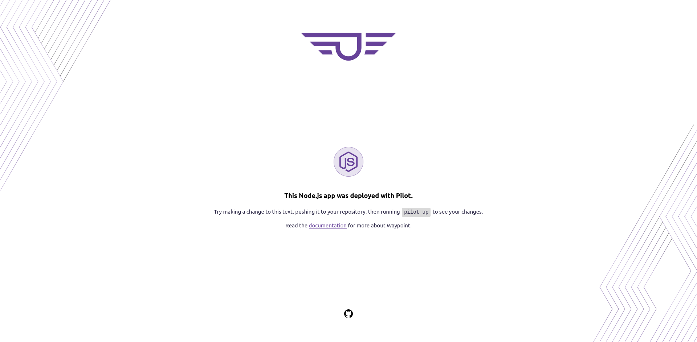
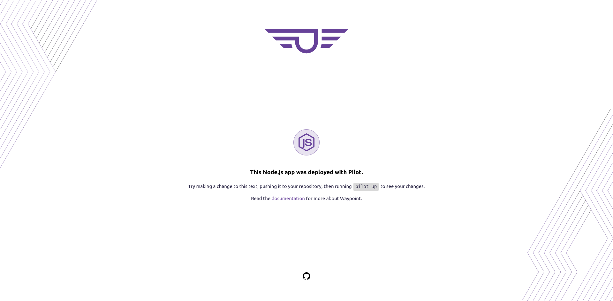

Pilot is an open-source, multi-cloud framework for provisioning an internal PaaS with a workflow-agnostic build, deploy, and release pipeline.
 
Pilot utilizes HashiCorp's Waypoint to spin up an internal platform that you can use to manage and deploy your apps!